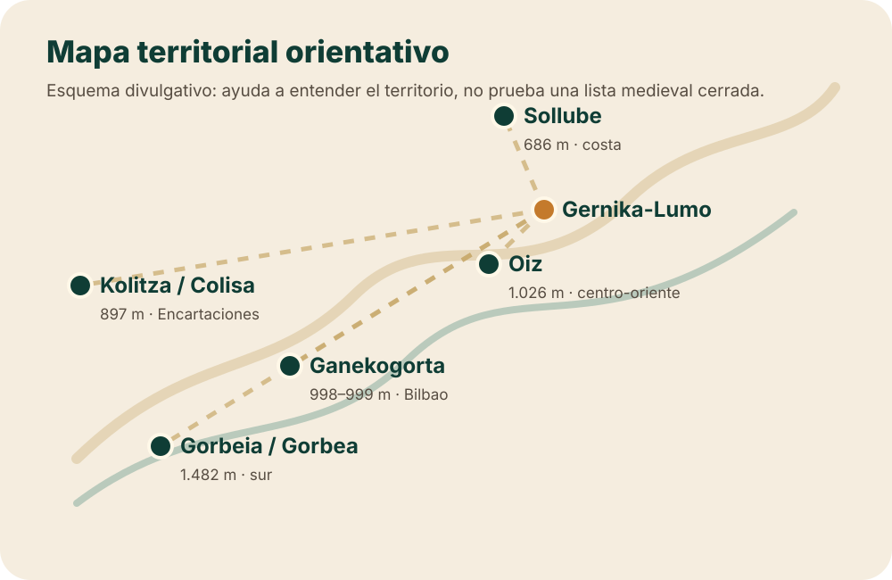

El símbolo vivo
La imagen de cinco cumbres que convocan a Gernika es memoria compartida y patrimonio. Es real como cultura, con independencia de su exactitud histórica.
Una sola página para ubicar Gorbeia, Oiz, Sollube, Kolitza y Ganekogorta, leer sus fichas y ver el mapa, distinguiendo siempre tradición cultural, lectura territorial y prueba documental. La clave nueva es no confundir las cinco bocinas antiguas con una lista medieval cerrada de cinco cumbres.
No mezcles tres planos distintos. Casi todos los malentendidos sobre los montes bocineros nacen de saltar de uno a otro sin avisar.
La imagen de cinco cumbres que convocan a Gernika es memoria compartida y patrimonio. Es real como cultura, con independencia de su exactitud histórica.
Altitud, distancia y posición ayudan a entender el territorio y a Gernika como centro. Orienta, pero no demuestra una práctica medieval.
Las fuentes antiguas apuntan a cinco bocinas, Gernika/Garnica, Junta General, merindades y oficios como vozineros o sayones. No documentan esta lista cerrada de cinco montes como sistema medieval.
La investigación reciente desplaza el foco: antes de preguntar “qué cinco cumbres eran”, conviene entender cómo una fórmula institucional de bocinas, merindades y oficios terminó convertida en una geografía simbólica de montes.
El núcleo más antiguo que se está verificando gira alrededor de cinco bocinas, Gernika/Garnica, Junta General, cinco merindades y oficios como vozineros/bocineros y sayones. Esa capa no equivale todavía a una lista medieval cerrada de cinco montes concretos.
No son fichas de ruta ni sustituyen a la cartografía oficial: son fichas de orientación histórica y territorial. Cada una incluye dos medidores didácticos —plausibilidad acústica hacia Gernika y valor visual/territorial— para comparar de un vistazo.
Nota común: la presencia de Gorbeia, Oiz, Sollube, Kolitza/Colisa y Ganekogorta en la tradición moderna no prueba que aparezcan como lista cerrada de montes bocineros en las fuentes antiguas. La capa antigua apunta antes a cinco bocinas, Gernika, Junta General, merindades y oficios. Las altitudes se dan como referencia divulgativa y pueden variar ligeramente según la fuente cartográfica.
1.482 m · Arratia y límite Bizkaia-Álava
Gran hito territorial del sur de Bizkaia. Su valor como cumbre simbólica es fuerte, pero la acústica directa hacia Gernika es débil por distancia y relieve.
Aparece en la lista tradicional moderna localizada en Trueba 1872, formulada con cautela.
Macizo de referencia meridional, visible como borde territorial amplio.
Hito territorial de gran altitud; la acústica directa hacia Gernika queda muy limitada por distancia y relieve.
1.026 m · Durangaldea, Lea-Artibai y cuencas hacia Urdaibai
Cumbre central-oriental con gran coherencia visual y territorial respecto a Gernika y Urdaibai.
Integra la lista de cinco montes tradicionales y también la lista ampliada de nueve montañas/rocas de Trueba 1873/1880.
Punto alto del eje central-oriental de Bizkaia.
Muy buena lectura visual y acústica relativamente favorable hacia Gernika; aun así, plausibilidad física, no prueba documental.
686 m · Busturialdea, Bermeo, Urdaibai y costa occidental
Es la cumbre con relación territorial más inmediata hacia Gernika dentro de la lista tradicional. Su proximidad refuerza la plausibilidad física, no la prueba documental medieval.
Figura en la lista tradicional de 1872 y en la lista ampliada de 1873/1880.
Conecta el litoral de Busturialdea con el entorno de la villa foral.
El monte con mejor plausibilidad acústica directa hacia Gernika por proximidad y relación topográfica; sigue siendo plausibilidad, no prueba.
879 m aprox. · Enkarterri, Balmaseda y extremo occidental de Bizkaia
Referencia occidental potente para integrar Enkarterri en el relato territorial, pero muy débil como señal directa hacia Gernika.
Trueba lo recoge como Colisa en la primera lista completa localizada; Delmas menciona Colisa como pico territorial, no como monte bocinero.
Hito occidental con valor simbólico y comarcal.
Referencia occidental de la lista; relación directa con Gernika muy limitada por distancia y orografía.
998–999 m · Bilbao, valle del Nervión y entorno suroccidental
Cumbre visualmente relevante sobre el área de Bilbao-Nervión. Su relación directa con Gernika es menor que la de Oiz o Sollube.
Aparece como Ganecogorta en Trueba 1872 y en la lista ampliada de 1873/1880.
Punto de referencia del área de Bilbao y del eje del Nervión.
Cumbre visualmente relevante sobre Bilbao-Nervión, pero acústicamente débil hacia Gernika.
Lectura geográfica auxiliar de las cinco cumbres tradicionales, lado a lado. Es orientación territorial, no documentación histórica.
| Monte | Altitud | Distancia a Gernika | Acústica hacia Gernika | Visual / territorial | Comentario breve |
|---|---|---|---|---|---|
| Gorbeia / Gorbea | 1.482 m | 31–34 km | 1/5 · Muy baja | 4/5 · Alta | Hito territorial de gran altitud; acústica directa hacia Gernika muy limitada por distancia y relieve. |
| Oiz | 1.026 m | 14–17 km | 4/5 · Alta | 5/5 · Muy alta | Cumbre central-oriental con muy buena lectura visual y acústica relativamente favorable hacia Gernika. |
| Sollube | 686 m | 11–13 km | 5/5 · Muy alta | 4/5 · Alta | El monte con mejor plausibilidad acústica directa hacia Gernika por proximidad y relación topográfica. |
| Kolitza / Colisa | 879 m aprox. | 44–48 km | 1/5 · Muy baja | 3/5 · Media | Referencia occidental de la lista; relación directa con Gernika muy limitada por distancia y orografía. |
| Ganekogorta | 998–999 m | 25–29 km | 1/5 · Muy baja | 4/5 · Alta | Cumbre visualmente relevante sobre Bilbao-Nervión, pero acústicamente débil hacia Gernika. |
Criterio de lectura: la puntuación acústica valora una posible transmisión sonora directa hacia Gernika; la visual valora posición territorial y visibilidad aproximada. Ninguna puntuación sustituye a la documentación histórica. La lista de cinco cumbres se trata como tradición moderna localizada en Trueba 1872, no como enumeración medieval del Capitulado de 1342. El eje documental antiguo se lee mejor como bocinas, merindades, Gernika y oficios.
Ayuda a ver distancias, posición territorial y relación con Gernika-Lumo. Es una herramienta visual, no una prueba documental medieval.
Vista territorial orientativa con los cinco montes tradicionales y Gernika-Lumo.
Cargando mapa 3D…
Animación ilustrativa del relevo de aviso desde Gernika hacia los cinco montes. no reproduce la velocidad real del sonido ni demuestra un sistema medieval verificado: es un apoyo visual para imaginar el mecanismo de relevo.
Si el mapa 3D no carga por conexión, navegador o bloqueo de scripts, esta versión conserva la información esencial.

Los anillos muestran distancia aproximada respecto a Gernika. El brillo y las barras no demuestran que una bocina pudiera oírse: comparan de forma didáctica la plausibilidad acústica directa frente al valor visual, territorial y simbólico.
Cautela metodológica: esto no reconstruye cómo sonaron las bocinas ni demuestra cobertura acústica histórica. Depende de distancia, relieve, viento, humedad, instrumento, ruido ambiental y orientación. Sirve para imaginar escenarios, no para probarlos.
Después de ver los montes y el mapa, la conclusión separa tradición cultural, documentos y dudas abiertas.
Leer conclusión →Solo si quieres comprobar más: fuentes y archivo documental.